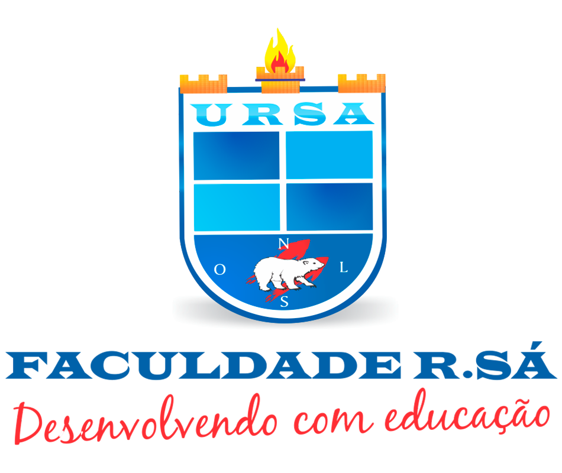
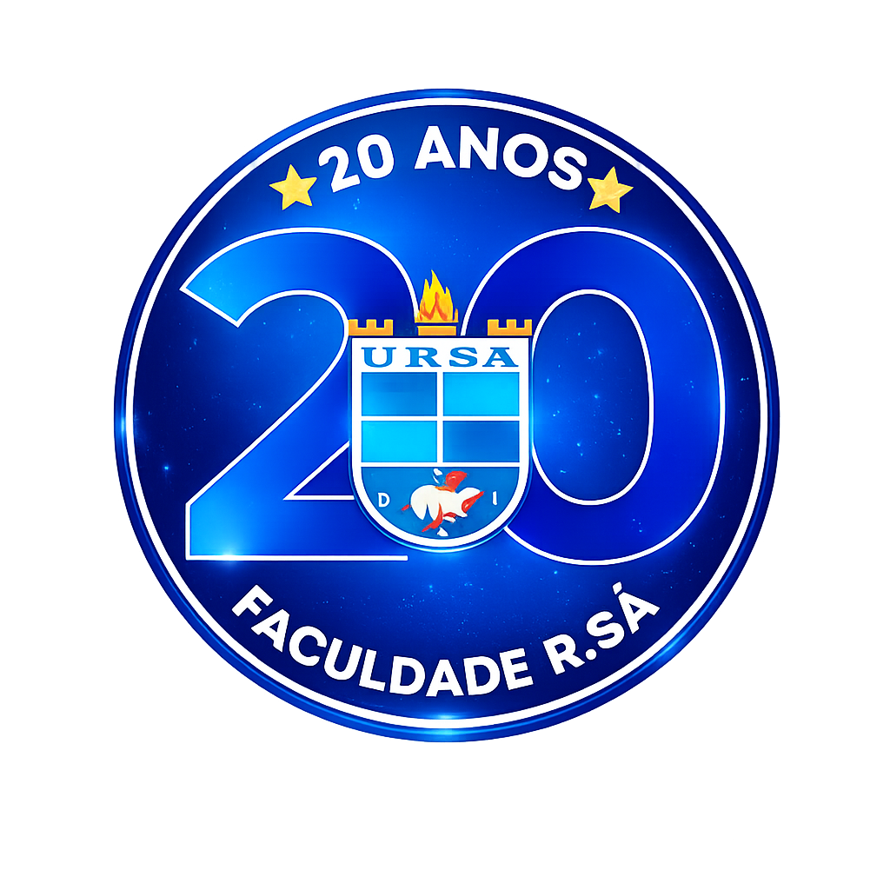
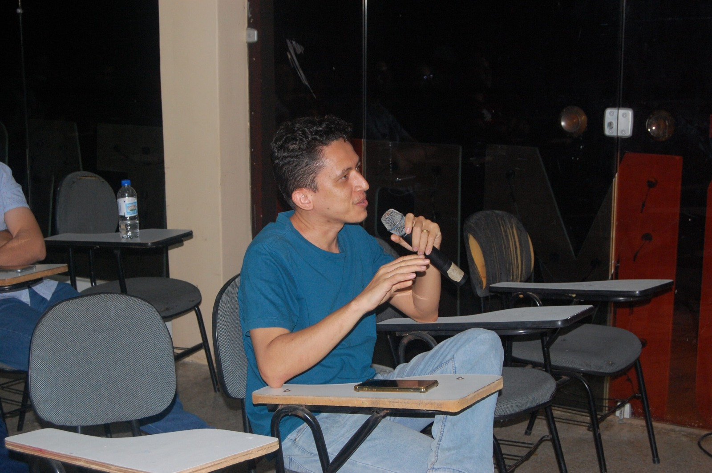
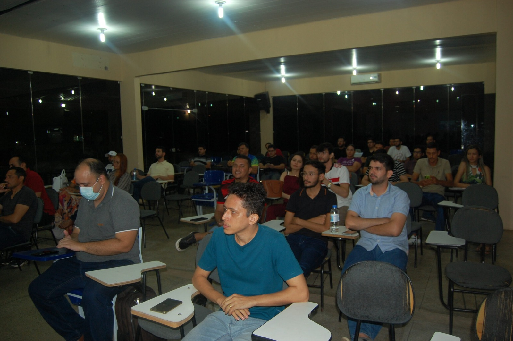
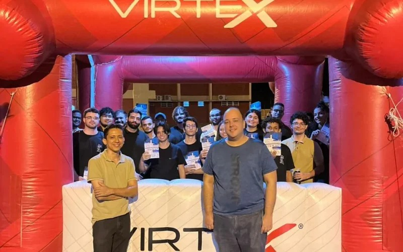
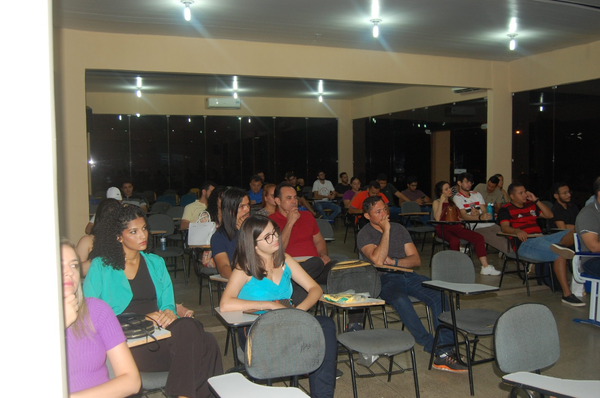

|
De 2006 a 2026: duas décadas de inovação, ensino, ciência e impacto social.
Conheça Nossa HistóriaDuas décadas contribuindo para o desenvolvimento acadêmico, científico e tecnológico da região.
O curso acompanhou as transformações tecnológicas entre 2006 e 2026.
Profissionais formados ao longo de duas décadas, atuando em diferentes áreas da tecnologia.
Egressos atuando em empresas, instituições e projetos nacionais.
Programação básica, redes locais, banco de dados e tecnologias clássicas.
Inteligência Artificial, Cloud Computing, Web e Ciência de Dados.
Adicionar trajetória profissional futuramente.
Adicionar informações de atuação no mercado.
Informações futuras sobre o projeto.
Informações futuras sobre impacto regional.
Adicionar informações futuramente.
Adicionar informações futuramente.
Adicionar artigos e projetos futuramente.




Continuaremos formando profissionais, promovendo ciência e impulsionando inovação.
Anny Kelly Sousa Pereira
Fabrício Araújo Rocha
Gleydson Dayon Gomes de Sousa
Izaías de Araújo Dias Neto
João Augusto Carvalho Moura
João Victor Pacheco Pinheiro
Kayo Ranniel Lustosa dos Santos
Levy Emanuel da Costa
Lucas de Sousa Leal
Luis Sérgio da Silva Lourenço
Renato Ribeiro da Costa Filho
Vitória Maria de Carvalho Luz